ԲՆՈՒԹԱԳԻՐ
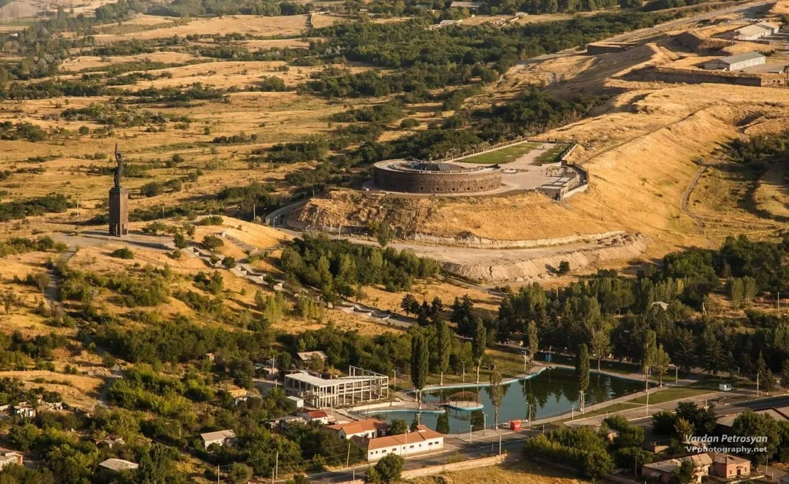
ՏՎՅԱԼՆԵՐ
Ուղղություն
Արևելքից
Հյուսիսից
Հարավից
Արևմուտքից
Հարավ-արևելքից
Սահմանակից մարզեր
Լոռի
–
Արագածոտն
–
Արագածոտն
Հարևան երկրներ
-
Վրաստան
-
Թուրքիա
-
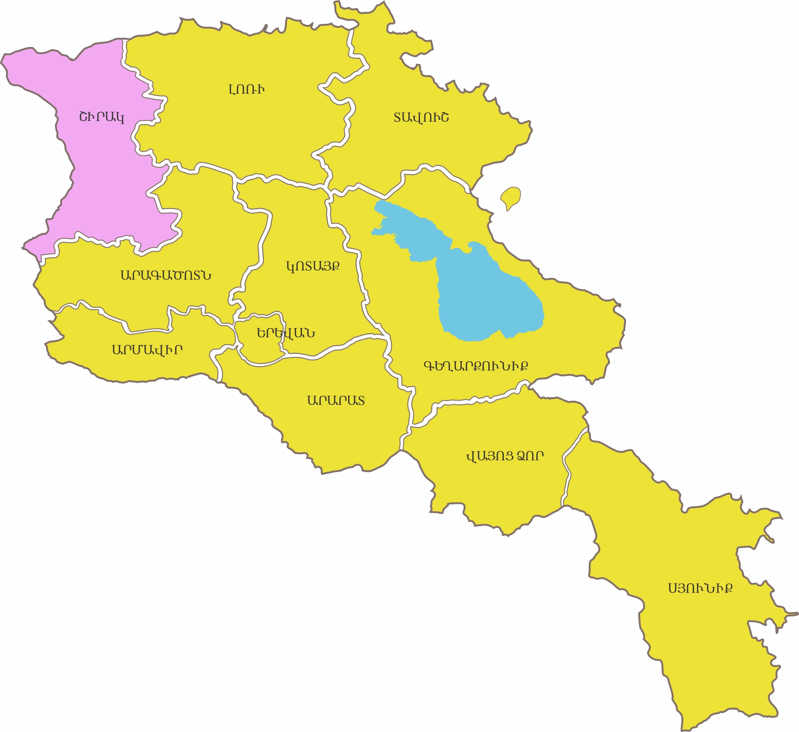
Հիմնադրումը
ՀՀ Շիրակի մարզը ձևավորվել է 1995 թ. ապրիլի 12-ին։
Տարածքը
Հանրապետության արևմտյան մարզն է՝ զբաղեցնելով երկրի տարածքի 9,0 % -ը ( 2681կմ²)
Վարչական կենտրոնը
Գյումրի քաղաք: Հանրապետության երկրորդ քաղաքն է մեծությամբ և նշանակությամբ: Գտնվում է Երևանից 120 կմ արևմուտք, Թուրքիայի սահմանից՝ 10 կմ արևելք: Հիմնադրվել է ուրարտական թագավոր Ռուսա Ա-ի կողմից (մ.թ.ա. 735-713թթ.), ըստ «Դարի գլուխ» հնավայրից գտնված մ.թ.ա.732թ.սեպագիր արձանագրության: Բնակեցված ՝ մ.թ.ա. 3-րդ հազ.-ից: Ի սկզբանե կոչվել է Իրդանիու, երկար ժամանակ՝ «Կումայրի», մինչև 1840 թ՝ Գյումրի, 1840-1924 -ը՝ Ալեքսանդրապոլ, 1924-1990 ՝ Լենինական, 1990-1992՝ Կումայրի, ապա կրկին՝ Գյումրի:
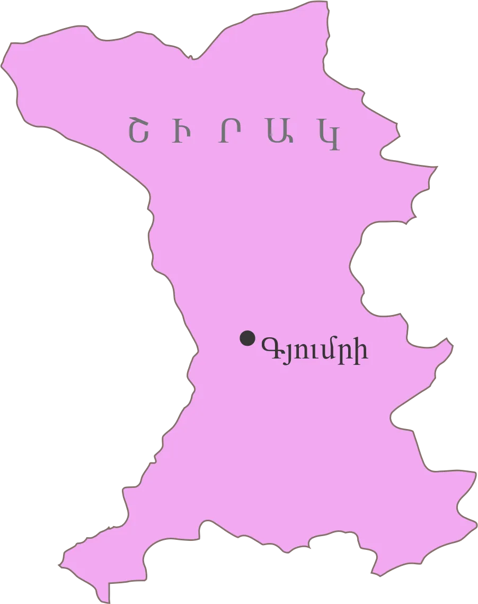
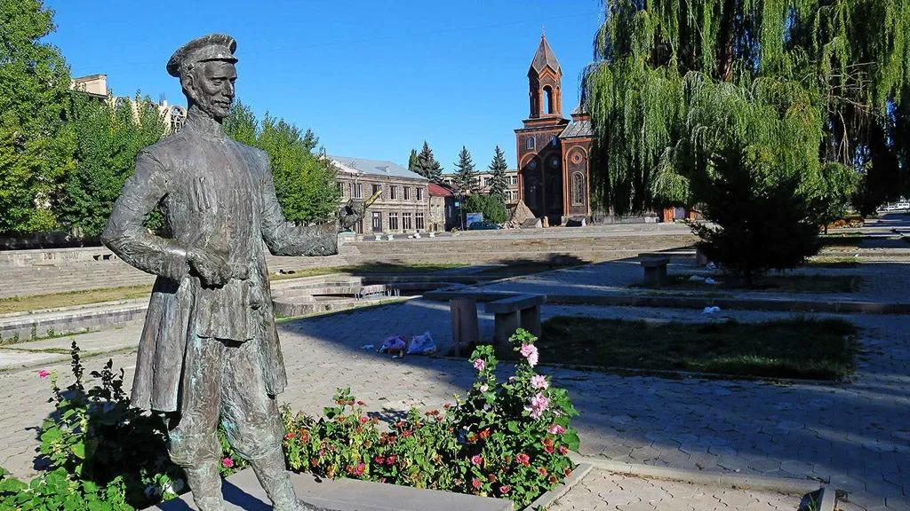
Ցուցիչ
Տարածք
Կոորդինատներ
Բարձրություն
Ամենաբարձր գագաթ
Ամենացուրտ վայրը
Վարչական կենտրոն
Տարածաշրջաններ
Քաղաքներ
Գյուղեր
Բնակչություն
Հեռավորություն Երևանից
Փոստային կոդ
Թեժ գիծ
Վեբ կայք
Տվյալ
2681 քառ կմ (9,0%)
40°50′ հ.լ., 43°55′ ավ.ե.
1500–2000 մ
Թեժառույք լեռ (3423 մ)
Պաղակն (−46 °C)
Գյումրի
Ախուրյան, Արթիկ, Անի, Ամասիա, Աշոցք
Գյումրի, Արթիկ, Մարալիկ
128
238,600 (8,0%) /2017/
101 կմ
2601–3126
(+374 312) 371-61
shirak.mtaes.am
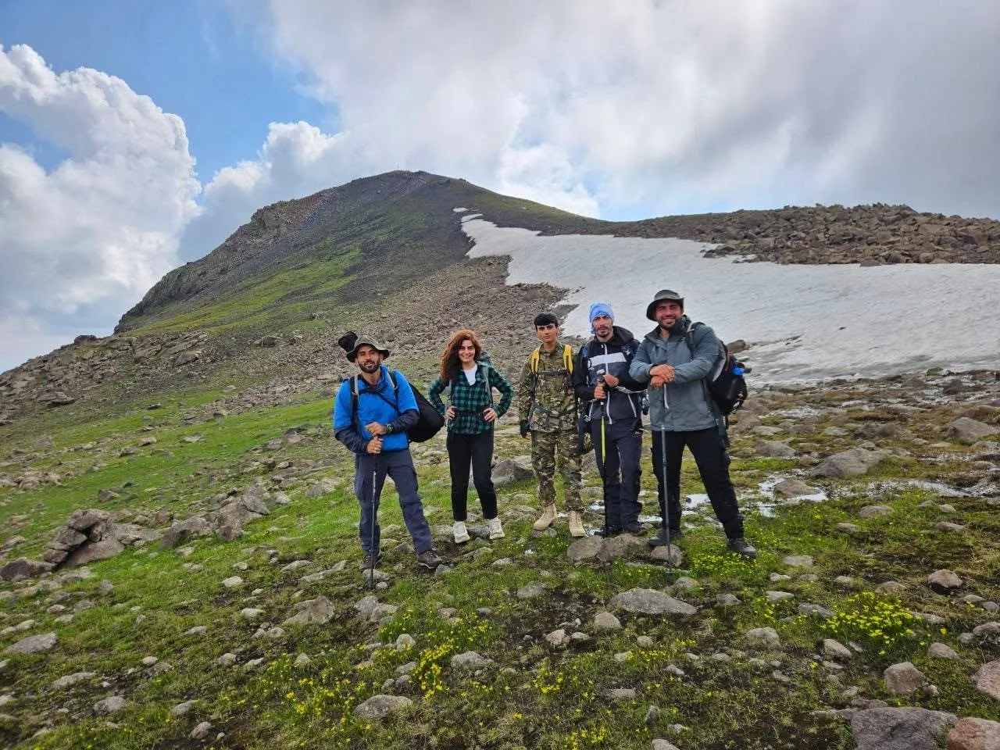
Ամենաբարձր գագաթ - Թեժառույք լեռ (3423 մ)
Մարզային հեռախոսային կոդեր
Բնակավայր
Գյումրի
Ախուրյան
Աշոցք
Ախուրյան
Անի
Ամասիա
Արթիկ
Մարալիկ
Կոդ
312
312
245
312
242
246
244
242
Մարզպետարան/Կապ
Հասցե․ ք. Գյումրի, Գ. Նժդեհ 16
Վեբ կայք shirak.mtad.am
Էլ․ հասցե․ shirak@mta.gov.am
Հեռ./ֆաքս (+374) 3-26-10
-
-
-
-
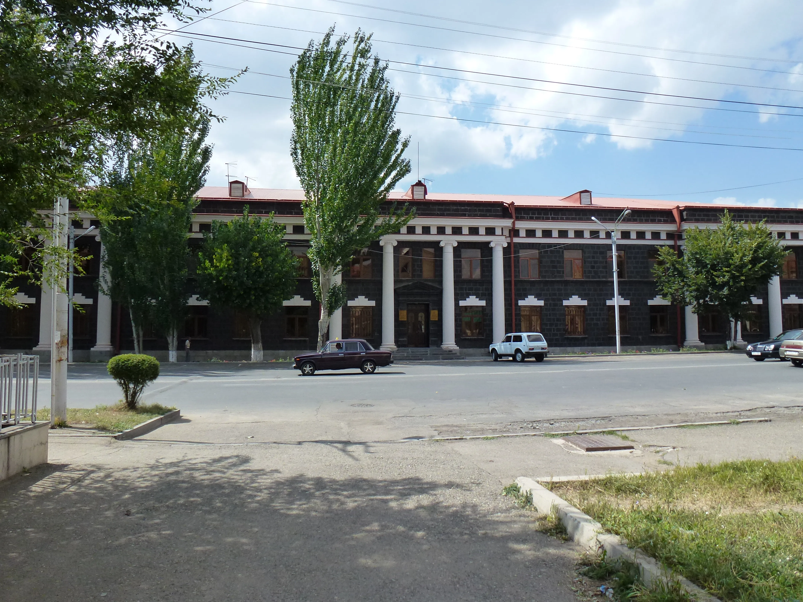
ԻՆՉՊԵՍ ՀԱՍՆԵԼ
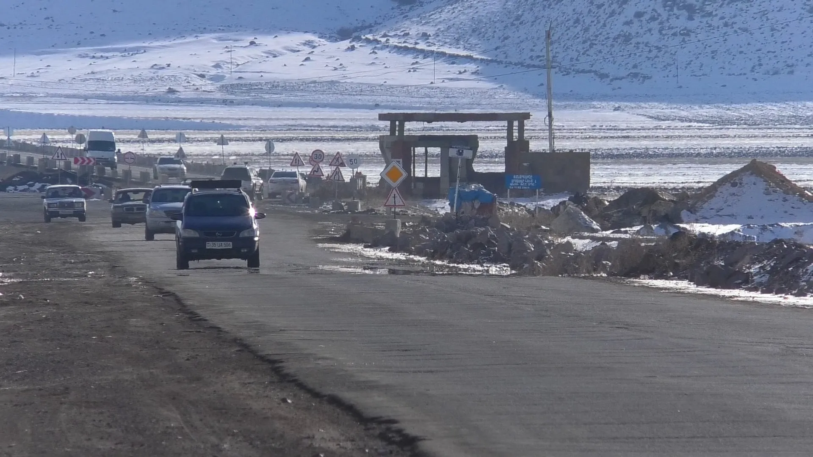
Ավտոմայրուղիներ / ճանապարհներ
Շիրակի մարզով անցնում են Հայաստանը Վրաստանին կապող գլխավոր ավտոճանապարհը և հանրապետական նշանակության հիմնական ավտոմայրուղիներ․
- Երևան – Աշտարակ – Թալին – Գյումրի (Մ-1)
- Երևան – Աշտարակ – Սպիտակ (Մ-3)
- Երևան – Արմավիր – Քարակերտ – Գյումրի
Մարզով անցնում է նաև Հյուսիս–Հարավ միջպետական ճանապարհը։
Աշտարակի մայրուղու միջոցով Շիրակը անմիջապես կապվում է մայրաքաղաքին։
Միջպետական նշանակության ճանապարհները համեմատաբար բարվոք վիճակում են։
Երթուղային տաքսի և ավտոբուս
- Երևանից Գյումրի երթուղային տաքսին հասնում է մոտ 2 ժամում։
- Տոմսի արժեքը՝ 1500 դրամ։
- Շարժվում են Կենտրոնական երկաթուղային կայարանից և Հյուսիսային ավտոկայանից։
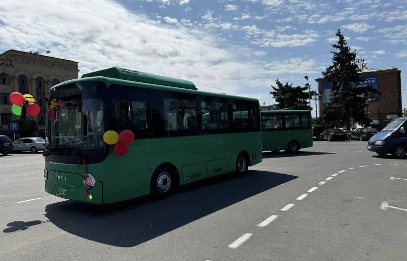
Միկրոավտոբուսներ («Mercedes Viano»)
- Երևան – Գյումրի – Երևան ուղևորափոխադրումներ։
- Երևանում՝ Աբովյան պուրակից,
- Գյումրիում՝ Հրապարակ և 58 թաղամաս։
- Տոմսի արժեքը՝ 1500 դրամ։
Դռնից դուռ ծառայություն
- Գյումրիի ցանկացած հասցեից մինչև Երևանի «Բարեկամություն» մետրո և հակառակը։
- Արժեքը՝ 1500 դրամ մեկ ուղության համար։
Երկաթուղի
Շիրակի մարզի տարածքով է անցնում Հայաստանը Վրաստանին կապող գլխավոր երկաթգիծը:
- Երևանից Գյումրի գնացքները գործում են ամեն օր։
- Սովորական գնացք – տևողությունը՝ 3 ժամ, արժեքը՝ 1000 դրամ։
- Ճեպընթաց գնացք – տևողությունը՝ 2 ժամ, արժեքը՝ 2500 դրամ։
- Մեկնումը՝ Կենտրոնական երկաթուղային կայարանից (նաև Նորագավիթից)։
- Տոմսերի վաճառքը սկսվում է մեկնումից 30 ր. առաջ։
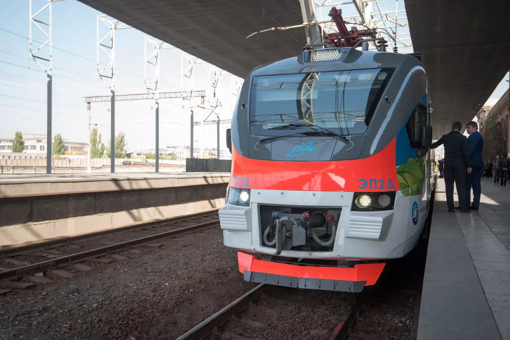
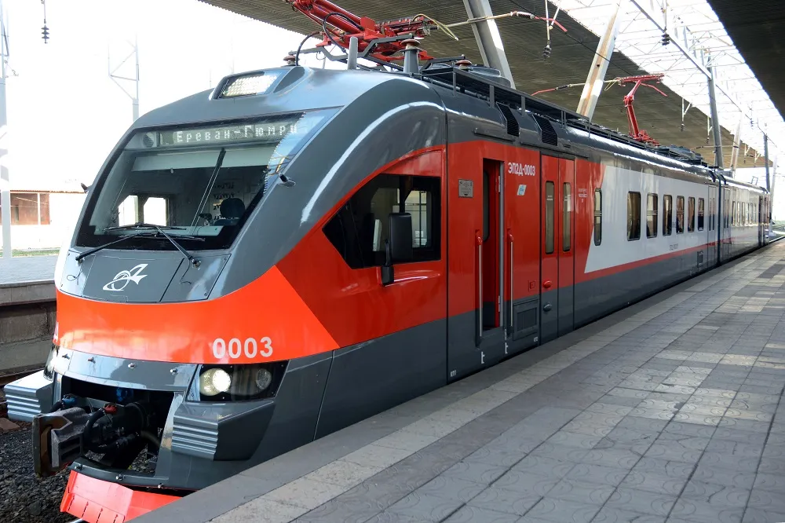
ԿԼԻՄԱ
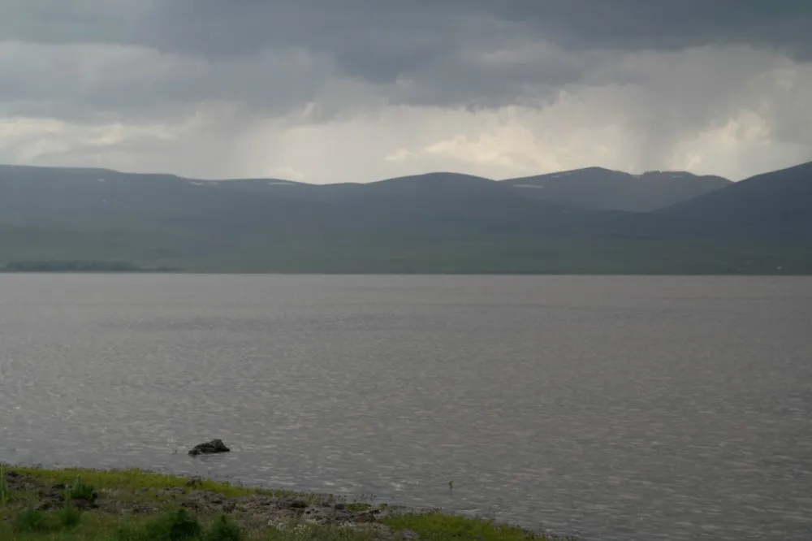
Շիրակի մարզի կլիման բազմազան է՝ հարավում համեմատաբար մեղմ և արևոտ, հյուսիսում՝ Հայաստանի ամենացուրտ ու ձնառատ պայմաններով: որը բնորոշվում է ցուրտ ու ձնառատ ձմեռներով, զով կամ շոգ ամառներով, առատ տեղումներով:
Կլիմայի առանձնահատկություններ
Ուղղաձիգ գոտիականության շնորհիվ առանձնացվում են 4 կլիմայական տիպեր․
- Բարեխառն կլիմա երկարատև, համեմատաբար տաք ամառներով և բարեխառն ցուրտ ձմեռներով
- Բարեխառն կլիմա մեղմ ամառներով և ցուրտ ձմեռներով (Շիրակի դաշտ)
- Չափավոր ցուրտ կլիմա կարճատև զով ամառներով և ցուրտ ձմեռներով (հյուսիսային շրջաններ)
- Ցուրտ լեռնատունդրային կլիմա (3000 մ-ից բարձր)
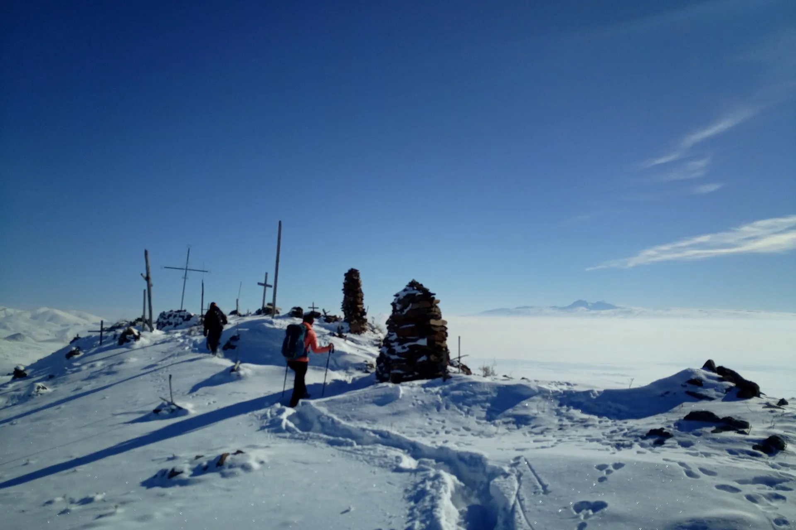
Եղանակների բնութագիր
Ձմեռ - խստաշունչ ու երկարատև, ձնառատ
Գարուն – զով, տեղումնառատ, հաճախ՝ քամոտ ու ամպամած
Ամառ - հարավում շոգ և չոր, հյուսիսում՝ զով
Աշուն – մեղմ, սկզբում արևոտ, հետո ավելի խոնավ ու մառախուղներով
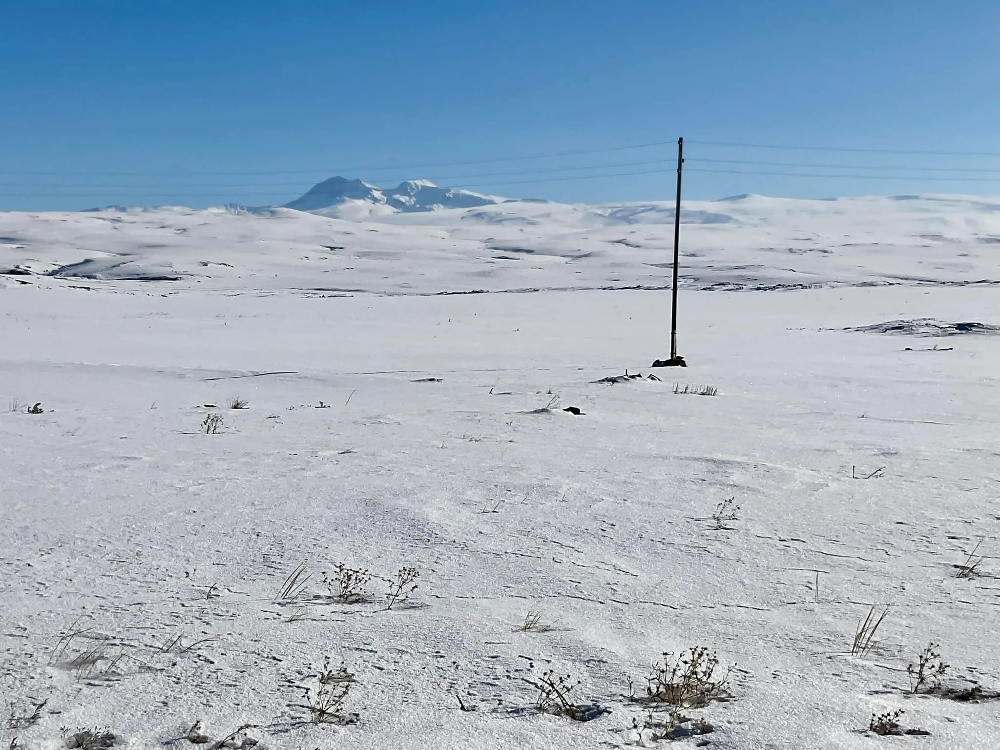
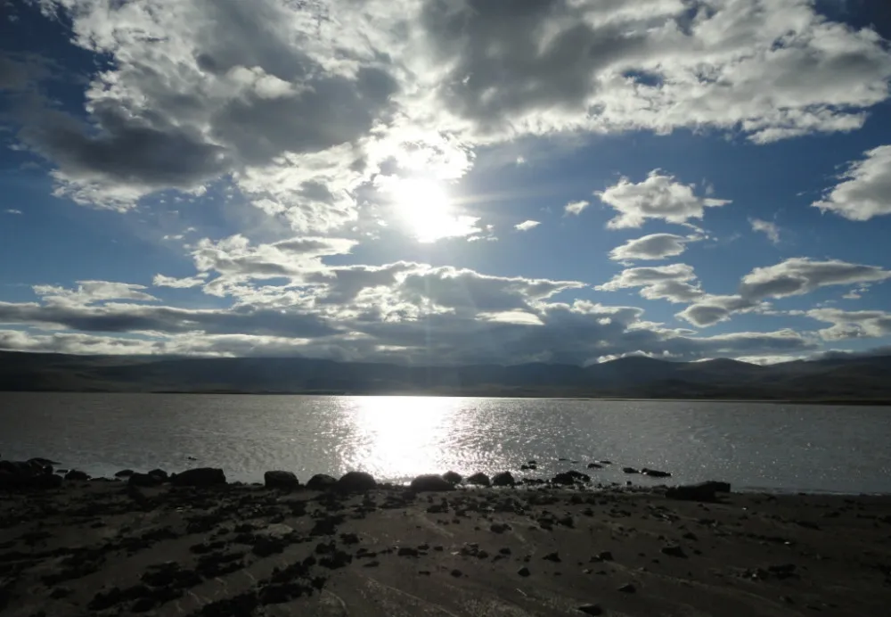
Ջերմաստիճան
- Տարեկան միջինը՝ մոտ +5 °C
- Հունվարին՝ –9 °C
- Հուլիս-օգոստոսին՝ +16…+17 °C։
Ձմռանը
- Հյուսիսում հունվարի միջին ջերմաստիճանը՝ −12 °C,
- Հարավում՝ −6 °C։
- Բնորոշ են կայուն ձնածածկույթը, ձնաբքերն ու մառախուղը։
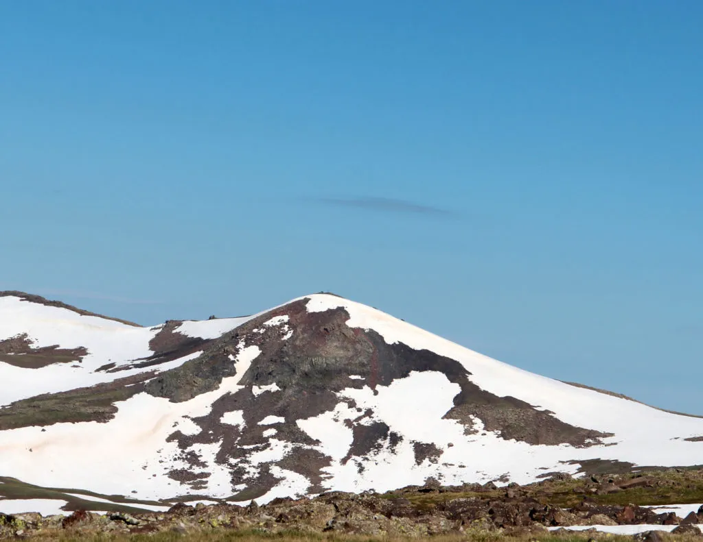
Ամռանը
- Հուլիսին միջինը՝ հյուսիսում +12 °C, հարավում՝ +20 °C։
- Առավելագույնը կարող է հասնել մինչև +36 °C։
- Տիպիկ են ամպրոպները։
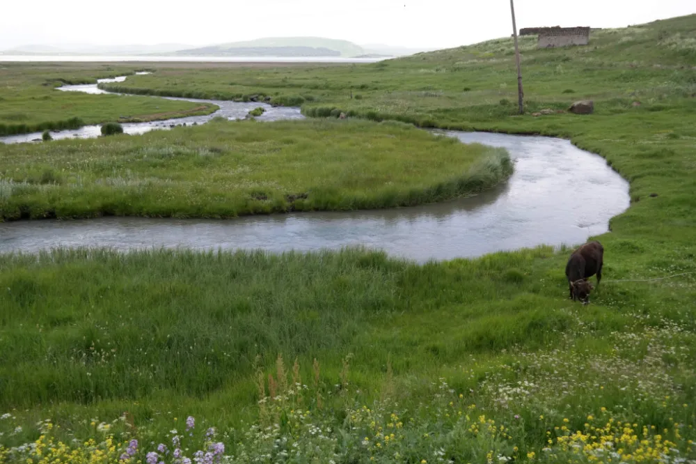
Ցրտի բևեռ
- Աշոցքի սարահարթում է գտնվում Հայաստանի ամենացուրտ վայրը՝ Պաղակնը, որը հայտնի է որպես Հայկական լեռնաշխարհի «ցրտի բևեռ»: Այստեղ գրանցվել է օդի բացարձակ նվազագույն ջերմաստիճանը՝ −46 °C։
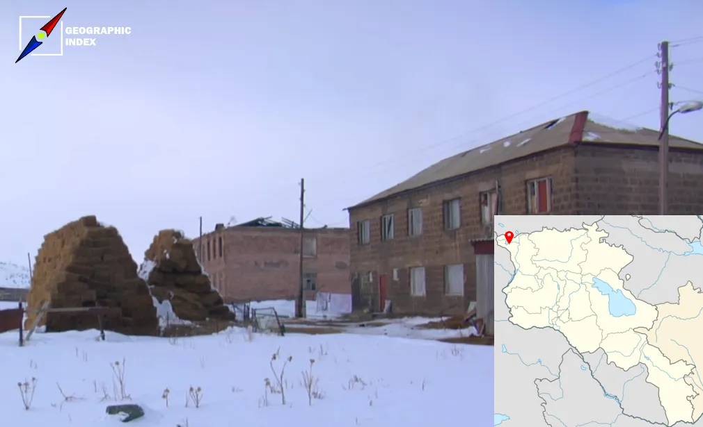
Տեղումներ
- Տարվա միջին տեղումների քանակը՝ մոտ 555 մմ,
- Հյուսիսային շրջաններում՝ 600–700 մմ,
- Բարձրլեռնային տարածքներում՝ 800–950 մմ։
- Ամենախոնավ ամիսը մայիսն է (մինչև 97 մմ), երկրորդը՝ հոկտեմբերը։
- Ամենաչոր ամիսը սեպտեմբերն է (մոտ 31 մմ)։
Քամիներ
- Մարզում գերակշռում են հյուսիսային և հյուսիս-արևելյան ուղղությունների քամիները։
- Միջին արագությունը՝ 2–3 մ/վ, ամռանը՝ մինչև 5 մ/վ։
- Ձմռանը հաճախ են բուքը և ուժեղ քամիները (մինչև 18–20 մ/վ )։
Արևափայլ
- Տարվա ընթացքում արևոտ օրերի մեծ մասը դիտվում է ամռանը։
- Ձմռանը մառախուղները և ամպամածությունը զգալիորեն կրճատում են արևափայլի տևողությունը։
- Արևափայլի միջին տարեկան տևողությունը – 2500–2700 ժամ։
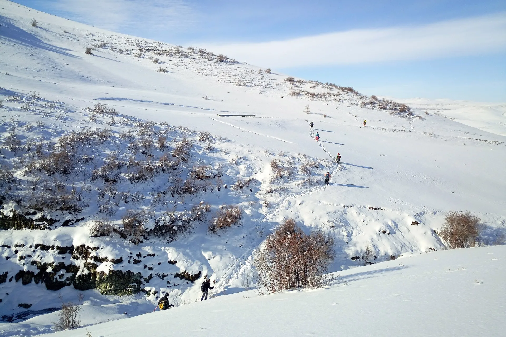